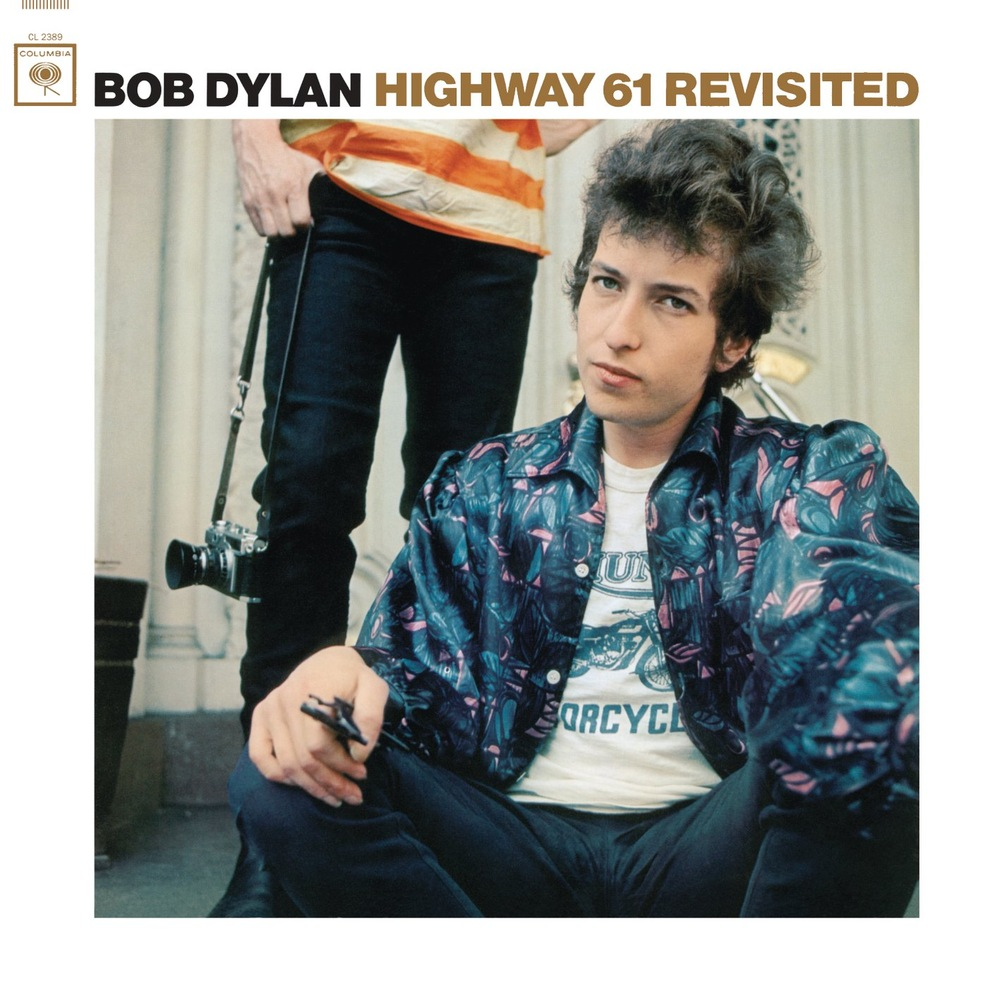

Highway 61 Revisited es el sexto álbum de estudio del músico estadounidense Bob Dylan, publicado por la compañía discográfica Columbia Records en agosto de 1965. Después de comenzar su carrera tocando música folk y de grabar en acústico —a excepción de la segunda cara de Bringing It All Back Home—, Dylan utilizó por primera vez una banda de acompañamiento en todas las canciones de Highway 61 Revisited, grabadas en Nueva York entre junio y agosto de 1965. El álbum, cuyo título hace referencia a la autopista que conecta su lugar de nacimiento, Duluth con ciudades sureñas famosas por su patrimonio musical como St. Louis, Memphis y Nueva Orleans, estuvo encabezado por el sencillo Like a Rolling Stone e incluyó canciones frecuentemente interpretadas en directo en sucesivos años como Highway 61 Revisited, Just Like Tom Thumb's Blues y Ballad of a Thin Man.
